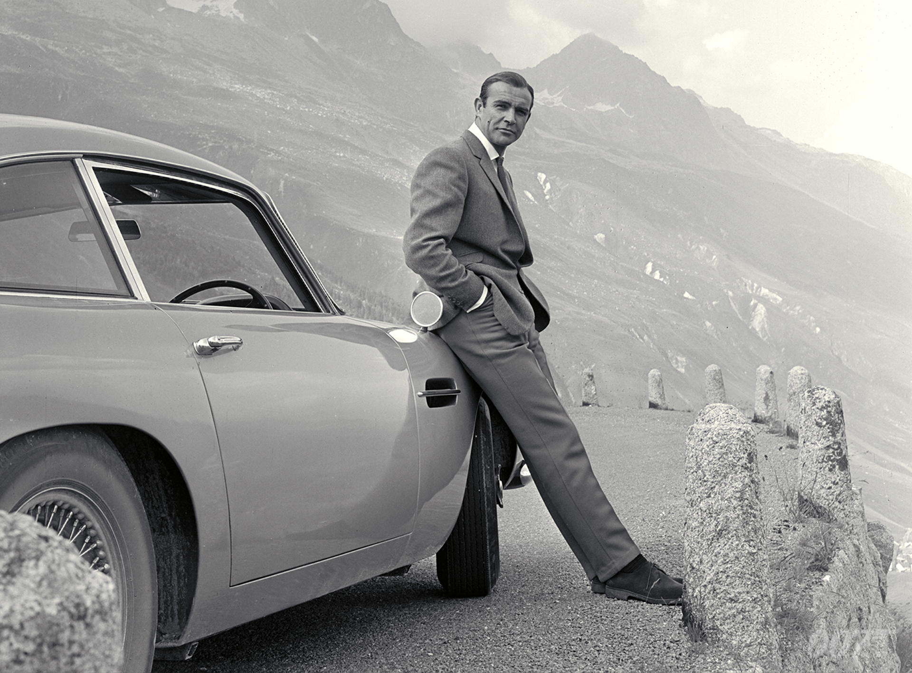

Used in MEDA Back-End Project - Winter Cohort 2020
Sir Sean Connery
Our First and Forever Beloved James Bond

Sean Connery as James Bond in Dr. No (1962).
"I have always hated that damn James Bond.
I'd like to kill him." - Sean Connery
Bullets of our 007's life (1930 - 2020):
1930: was born in Fountainbridge, Edinburgh, Scotland.
1946: joined the Royal Navy, and was later discharged at the age of 19.
1954: begun a film career as an extra in Herbert Wilcox's Lilacs.
1957: got his first film role as Spike in Montgomery Tully's No Road Back
1959: got his first leading role in Walt Disney Productions film, "Darby O'Gill and the Little People."
1962: came in the role of British secret agent James Bond in Dr. No.
1963: starred in another James Bond movie, From Russia with Love.
1964: starred in the third movie of James Bond series, Goldfinger.
1965: starred in the forth movie of James Bond series, Thunderball.
1967: starred in the fifth movie of James Bond series, You Only Live Twice.
1969: decided to depart the role as James Bond after starring in the sixth movie of James Bond series, On Her Majesty's Secret Service.
1971: returned for the seventh film, Diamonds Are Forever.
1983: made his final appearance as Bond in Never Say Never Again (Thunderball remake), and was selected as the third-greatest hero in cinema history by the American Film Institute.
1987: received the Academy Award for Best Supporting Actor from the role he starred in Brian De Palma's The Untouchables.
1989: starred in Steven Spielberg's Indiana Jones and the Last Crusade as Henry Jones, Sr, and received BAFTA and Golden Globe Award nominations for this role.
1998: received the BAFTA Fellowship, a lifetime achievement award from the British Academy of Film and Television Arts.
2003: retired from acting after the failure of the movie, "The League of Extraordinary Gentlemen."
2012: briefly came out of retirement to voice the title character in the Scottish animated film Sir Billi the Vet.
2020: died in his sleep on 31 October 2020, aged 90, at his home in the Lyford Cay community of Nassau in the Bahamas.